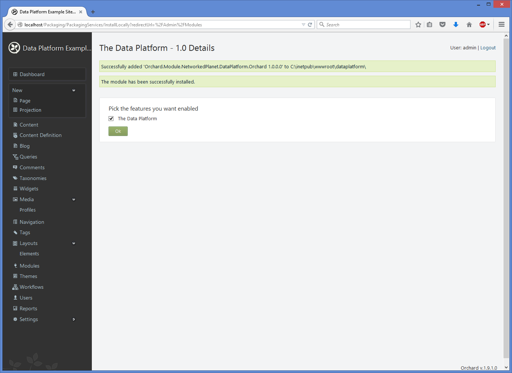

Installing the Data Platform Module¶
The Data Platform comes as a zipped file that contains the following:
- Orchard.Module.NetworkedPlanet.DataPlatform.Orchard.1.x.x.x.nupkg
- Orchard.Module.NetworkedPlanet.DataPlatform.Orchard.ContentParts.1.x.x.x.nupkg
- Config directory
- EULA (End User License Agreement)
- Acknowledgements
- Documentation
The location where you unzip this file is referred to in the following section as [INSTALLERDIR]
1. Install Orchard¶
Warning
To successfully install the Data Platform module, you must install Orchard via a download of the complete source, or via the Web Platform Installer in IIS tools. The Data Platform is not currently compatible with an installation of Orchard CMS from a zip of the Orchard.Web directory that is also offered by Orchard.
Follow the Orchard CMS documentation to install Orchard as a new website within IIS. The Data Platform 1.0 is compatible with Orchard CMS version 1.9.1
Note
To follow this installation guide you must add Modify access to the Orchard Modules folder for the group IIS_IUSRS.
On a production server, you should remove this permission after installing the Data Platform.
2. Upgrade Orchard Assemblies¶
The Data Platform requires a newer version of the Newtonsoft.JSON.dll than is provided by default with Orchard 1.9.1.
Copy the file [INSTALLERDIR]\\config\\bin\\Newtonsoft.JSON.dll to the bin directory of the Orchard website, replacing the existing file in that directory.
Open the Web.config file for the Orchard website and locate the following lines:
<dependentAssembly>
<assemblyIdentity name="Newtonsoft.Json" publicKeyToken="30ad4fe6b2a6aeed"/>
<bindingRedirect oldVersion="0.0.0.0-6.0.0.0" newVersion="6.0.0.0"/>
</dependentAssembly>
Update the oldVersion and newVersion attributes of this entry so that they refer to version 7.0.0.0 like this:
<dependentAssembly>
<assemblyIdentity name="Newtonsoft.Json" publicKeyToken="30ad4fe6b2a6aeed"/>
<bindingRedirect oldVersion="0.0.0.0-7.0.0.0" newVersion="7.0.0.0"/>
</dependentAssembly>
Save your changes and then restart the website for this change to take effect.
4. Create and set up the Download directory¶
Navigate to the root folder of your website and create a folder called Download
{kind=link}
Copy the web.config file from the directory [INSTALLERDIR]\\Config\\Download into this Download directory.
Make sure that the group IIS_IUSRS has read and write access to this folder.
5. Create the Import directory¶
Navigate to the root folder of your website and create a folder called Import. Make sure that the group IIS_IUSRS has read and write access to this folder.
6. Add the Data Platform License File¶
You can run the Data Platform on a server and run it on a website using the localhost domain without a license file. However to publish your site it requires a license file from Networked Planet.
The license file is a file named NetworkedPlanet.DataPlatform.Orchard.lic. Place this file in the root directory of your website.
See the Data Platform pricing page for more details about license features and costs, including our discounts for not-for-profit organisations.
7. Install BrightstarDB¶
Download the BrightstarDB installer and run to install the BrightstarDB triple store on your server. The Data Platform 1.0 is built with BrightstarDB 1.11.0 and should be compatible with all 1.x.x releases from 1.11.0 onwards.
8. Install the Data Platform¶
Open the Orchard CMS website in your browser and login to the dashboard. Navigate to the Modules page, and click the “Installed” tab. Click “Install a module from your computer” and browse to where you extracted the Data Platform installer directory, and select the Orchard.Module.NetworkedPlanet.DataPlatform.Orchard.1.x.x.x.nupkg file.
When the module has installed, you can immediately enable it.
9. [OPTIONAL] Install the Data Platform Content Parts Module¶
The Content Parts Module contains some additional Orchard content parts for presenting RDF data in a user-friendly manner. You can optionally install this module - it is not required for the correct operation of the Data Platform.
Open the Orchard CMS website in your browser and login to the dashboard. Navigate to the Modules page, and click the “Installed” tab. Click “Install a module from your computer” and browse to where you extracted the Data Platform installer directory, and select the Orchard.Module.NetworkedPlanet.DataPlatform.Orchard.ContentParts.1.x.x.x.nupkg file.
When the module has installed, you can immediately enable it.
10. Configure the BrightstarDB settings¶
Before you can create any datasets, you must first set the connection to the BrightstarDB server, this is found in the main Settings page of Orchard CMS.
{kind=link}
BrightstarDB Connection String
Information about BrightstarDB connection strings can be found in the online BrightstarDB documentation .
For example, the following could be used as an embedded connection to the BrightstarDB server using a data directory located at C:\\Brightstar:
Type=embedded;StoresDirectory=c:\Brightstar
The following would be used as a REST connection to a locally installed BrightstarDB server (note that the Store Name is not included in this connection string):
Type=rest;endpoint=http://localhost:8090/brightstar;
We recommend using the REST connection to a BrightstarDB server. You may also choose to locate your BrightstarDB server on a different machine from the web server - if so please ensure that the port used by BrightstarDB (by default 8090), is open for connections from the web server machine.